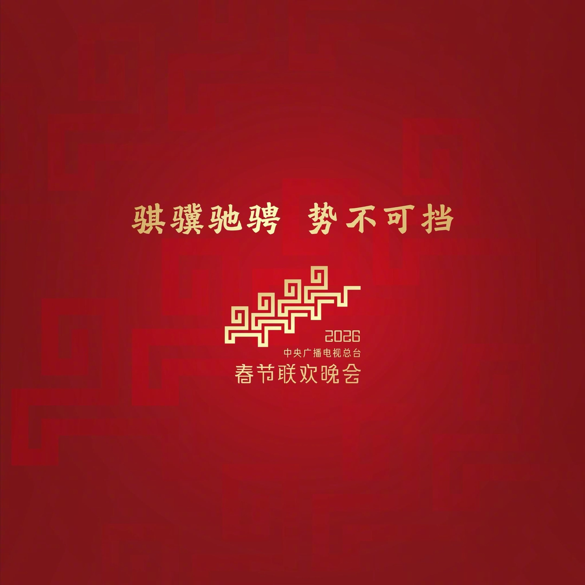
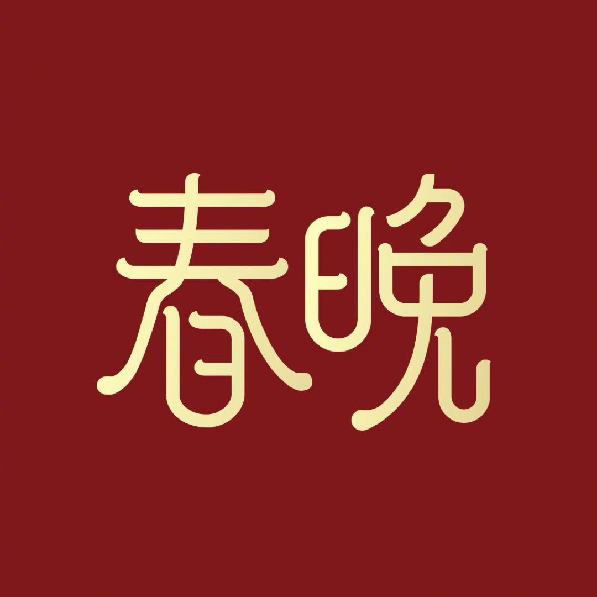

微博
weibo.com
原创概念页面
登录微博
无障碍

返回
公开账号封面参考

春晚
♀
原创概念
1407.1万
粉丝
90
关注
1.83亿
转评赞
＋ 关注
私信
原创吉祥物
春小咩
2027 丁未羊年概念设计
统计为参考页快照
春晚主题原创概念创作 · 记录年味，分享团圆
微博
视频
超话
相册
文章
全部微博
原创
热门
暂无相关微博
试试“春小咩”“舞台”或“团圆”
查看全部微博
已展示全部原创与回顾内容
原创内容 · 互动仅保存在本机
↑
×